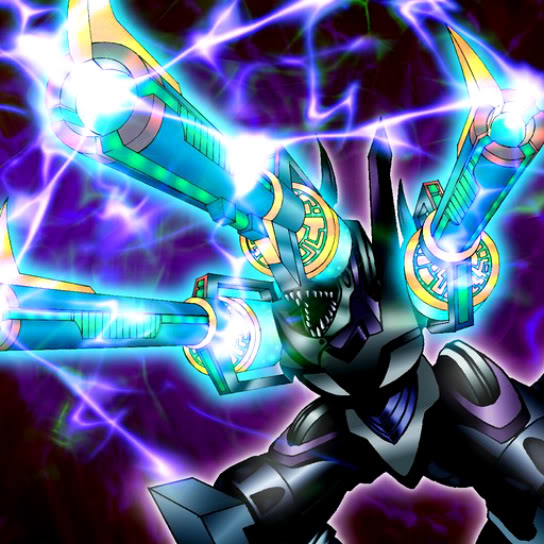

Barrel Dragon

Description: "When this card is flipped face-up, 1 card other than own is randomly selected for destruction."
STATS
ATK: 2600
DEF: 2200
DECK COST
Deck Cost per Card: 53
EFFECT NOT IMPLEMENTED